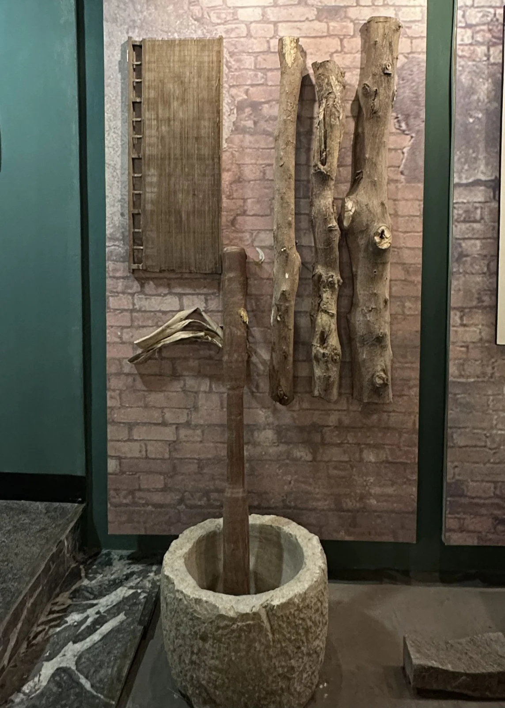
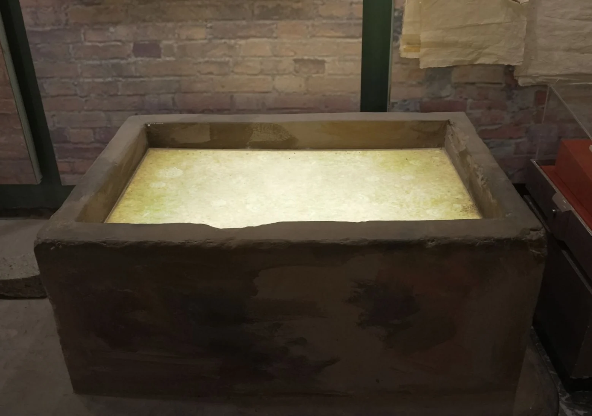
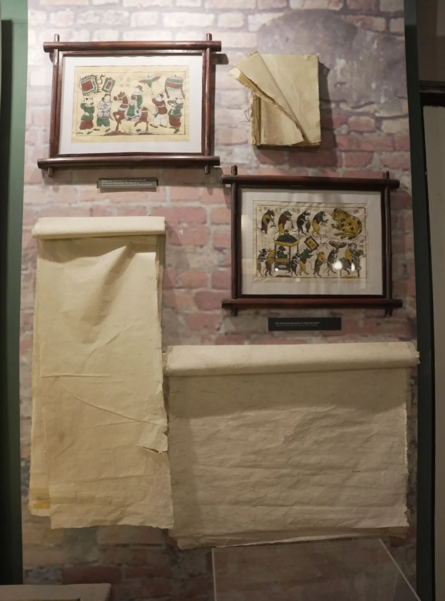

Trong bài
Giấy dó là chất liệu gắn bó với lịch sử chữ viết, văn chương và nghệ thuật dân gian Việt Nam. Mỗi tờ giấy dó thủ công đòi hỏi sự kiên nhẫn, kinh nghiệm cùng đôi tay khéo léo của người thợ. Tại Bảo tàng Văn học Việt Nam, không gian trưng bày nghề làm giấy dó tái hiện những công đoạn làm giấy, giúp người xem hiểu hơn về quá trình tạo nên một chất liệu đã lưu giữ nhiều giá trị văn hóa qua các thế hệ.
Giấy dó – chất liệu truyền thống của văn hóa Việt Nam
Nghề làm giấy dó ở Việt Nam xuất hiện từ khoảng thế kỷ III–IV. Làng Yên Thái, thuộc khu vực Tây Hồ, Hà Nội, từng là một trung tâm sản xuất giấy nổi tiếng. Trong Dư địa chí (1435), Nguyễn Trãi cũng ghi nhận hoạt động làm giấy tại phường Yên Thái, cho thấy nghề thủ công này đã có vị trí quan trọng nhất định trong đời sống văn hóa từ nhiều thế kỷ trước.
Giấy dó được làm chủ yếu từ vỏ cây, trải qua nhiều công đoạn xử lý để tạo thành những tờ giấy bền. Chất liệu giấy này phù hợp với việc viết chữ, vẽ tranh và in mộc bản. Trong lịch sử, giấy dó được sử dụng để ghi chép văn bản, lưu giữ tác phẩm văn học, in kinh sách và sáng tác tranh dân gian.
Sự phát triển của nghề làm giấy còn gắn với nhu cầu giáo dục và truyền bá tri thức. Khi giấy được sản xuất trong nước, hoạt động ghi chép, biên soạn và in ấn có thêm nguồn vật liệu phục vụ đời sống văn hóa. Nhiều văn bản cổ còn được lưu giữ đến ngày nay nhờ sự kết hợp giữa chất liệu giấy, kỹ thuật chế tác và điều kiện bảo quản phù hợp.
Quy trình làm giấy dó thủ công
Để làm giấy dó, người ta thường sử dụng các loại cây chính: dó, bo, cãnh, dướng, mật và mộc. Để làm giấy gió lụa, người ta chỉ sử dụng vỏ cây cãnh, còn vỏ cây mộc là loại vỏ xấu và thô nhất, lại thường được dùng làm giấy gói hàng.
Bước 1: Ngâm và xử lý vỏ cây. Vỏ cây sau khi thu gom được bó thành từng nhóm nhỏ, ngâm trong nước sạch để loại bỏ bụi bẩn và tạp chất. Tiếp đó, nguyên liệu được ngâm trong nước vôi loãng để tiến hành muối vôi vỏ cây. Công đoạn này giúp vỏ cây mềm hơn, tạo điều kiện thuận lợi cho việc tách và làm tơi sợi. Công đoạn xử lý nguyên liệu này thường mất từ hai đến ba ngày và có một gia đình trong làng chuyên nhận đảm trách công việc này. Thời kỳ nghề giấy thịnh vượng nhất ở làng có tận bốn cái lò đồ vỏ được đặt ngay bên ao làng, làm suốt ngày đêm mà vẫn không đủ nguyên liệu cho làng dùng.
Bước 2: Giã và làm tơi sợi. Sau khi xử lý, vỏ cây được rửa sạch, để ráo rồi giã hoặc đập cho các sợi tách ra (nếu là vỏ cây dó thì lột). Người thợ tiếp tục loại bỏ phần xơ thô, tạp chất để thu được nguyên liệu phù hợp. Những sợi mịn được giữ lại để tạo nên chất giấy có bề mặt đẹp.
Bước 3: Chuẩn bị bột giấy. Phần sợi đã xử lý được hòa vào bể vôi để đảm bảo đủ độ bở của tơ, sau đó đem phá bìa, đánh tơ vào trang giấy. Người thợ sử dụng chất nhớt lấy từ cây mò để tạo độ kết dính và giúp bột giấy phân tán đều, hạn chế vón cục. Đây là khâu quan trọng, ảnh hưởng đến sự đồng đều của tờ giấy sau khi hình thành.
Bước 4: Seo giấy. Người thợ sử dụng dụng cụ gọi là liềm seo, được tạo từ những nan tre hoặc đồng đan thành khung lưới. Người thợ dùng liềm seo cho vào bể bột giấy và tiến hành tráng giấy, những sợi tơ bám vào các mắt lưới ngang, dọc trồng chéo khác nhau tạo nên một lớp giấy mỏng, dai như lụa.
Đây là công đoạn đòi hỏi nhiều kinh nghiệm. Nếu thao tác không đều, bột giấy sẽ khiến cho tờ giấy có độ dày mỏng khác nhau. Vì vậy, người thợ phải phối hợp nhịp tay, lực chuyển động và độ nghiêng của khung để tạo ra lớp giấy đạt yêu cầu.
Bước 5: Ép và làm khô. Sau khi seo, các tờ giấy được xếp chồng, ép uốn, cho vào lò can giấy để loại bỏ bớt nước rồi tách ra và đưa đi sấy hoặc làm khô. Khi hoàn tất, giấy được kiểm tra, phân loại và xếp thành từng tập.
Khám phá nghề làm giấy dó tại Bảo tàng Văn học Việt Nam
Nổi bật trong khu vực trưng bày là các đoạn thân cây, vỏ cây và dụng cụ gắn với quá trình chế biến nguyên liệu. Bể chứa nước dùng trong công đoạn làm giấy cùng những dụng cụ giúp tái hiện phần nào môi trường lao động của làng nghề xưa. Những vật dụng mộc mạc này cho thấy nghề làm giấy phải phụ thuộc nhiều vào sức người và kinh nghiệm truyền lại qua nhiều thế hệ.


Bên cạnh đó, bảo tàng còn trưng bày những tờ giấy dó thành phẩm với bề mặt màu ngà tự nhiên, có độ mỏng và những nếp gấp đặc trưng, sử dụng trong những bức tranh dân gian hoặc lưu truyền kiến thức, chữ viết.

Giấy dó không chỉ đơn thuần là vật liệu phục vụ viết, vẽ và in ấn mà còn là một phần của di sản văn hóa Việt Nam. Nghề làm giấy truyền thống phản ánh sự hiểu biết của người xưa về nguyên liệu tự nhiên, khả năng tổ chức lao động và kỹ thuật chế tác được tích lũy qua nhiều thế hệ.
Qua các hiện vật ở không gian trưng bày tại Bảo tàng Văn học Việt Nam, người xem có thêm cơ hội khám phá nghề giấy dó và hiểu hơn ý nghĩa của việc gìn giữ di sản thủ công Việt Nam.
Bảo tàng Văn học Việt Nam